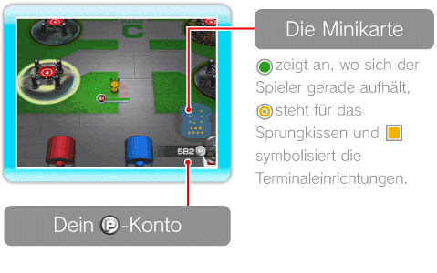
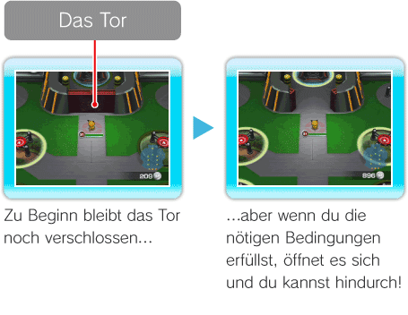
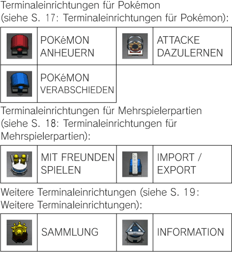
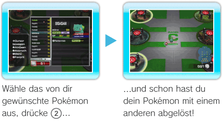

12 |
Das Terminal |
 |
|
Der Aufbau des Bildschirms im Terminal Hier steht dir eine Minikarte zur Verfügung. Außerdem kannst du überprüfen, wie viele 
Was du im Terminal alles tun kannst Vom Terminal aus gelangst du nicht nur mittels der Sprungkissen in die verschiedenen Stufen oder zum Battle Royale! Du kannst dort auch das Angebot der vielfältigen Terminaleinrichtungen nutzen!
Zu einer Stufe aufbrechen Jeder Rang baut sich aus sechs verschiedenen Stufen auf, die du vom Terminal aus mittels der Sprungkissen erreichen kannst. Näherst du dich einem Sprungkissen, das zu einer Stufe führt, die du bereits geschafft hast, hast du die Möglichkeit zu überprüfen, wie oft du die Stufe schon gemeistert hast, welche Pokémon dir dort begegnet sind und welche von ihnen du in dein Team aufgenommen hast. Dabei werden Pokémon, die du in dein Team aufgenommen hast, mit einem farbigen Bild angezeigt, während solche, denen du bisher nur begegnet bist, in schwarzweiß erscheinen. Pokémon, denen du noch nicht begegnet bist, werden als angezeigt.
Am Battle Royale teilnehmen Um am Battle Royale teilnehmen zu können, muss sich ein Pokémon in deinem Team befinden, dessen Stärke (siehe S. 11: Der Aufbau des Pokémon-Statusfeldes) einen gewissen Schwellenwert überschreitet. Hast du diese Bedingung erfüllt, öffnet sich das Tor. Dahinter wirst du ein Sprungkissen finden, das dich direkt zum Battle Royale katapultiert. Du kannst übrigens jederzeit überprüfen, welche Stärke du benötigst, um am Battle Royale teilnehmen zu dürfen, indem du etwas näher an das Tor herangehst!  Wie man die Terminaleinrichtungen richtig einsetzt
Ob du deinen Pokémon nun neue Teammitglieder zur Seite stellen oder ihnen zusätzliche Attacken beibringen möchtest – jede der Einrichtungen, die du im Terminal findest, bietet dir eine andere hilfreiche Dienstleistung an.

Pokémon ablösen Drücke  |
 , um das Ablösemenü (siehe S. 11: Das Ablösemenü) zu öffnen und das Pokémon, das du gerade steuerst, mit einem anderen abzulösen.
, um das Ablösemenü (siehe S. 11: Das Ablösemenü) zu öffnen und das Pokémon, das du gerade steuerst, mit einem anderen abzulösen. |
 |
 |